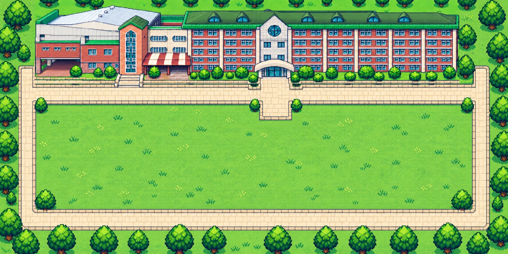

픽셀 학교 투어
군산여상
한 바퀴
잔디마당에서 출발해 1층부터 5층까지, 우리 학교 구석구석을 둘러보세요.
여기는 잔디마당
중앙현관으로 들어가면 1층, 왼쪽 계단으로 올라가면 2층이에요. 「학교 전경 보기」를 누르면 드론으로 찍은 학교 사진도 볼 수 있어요.
지금은 야외
조작 방법
- 걷기 — 지도를 한 번 누른 뒤 방향키 / 휴대폰은 지도 왼쪽 아래 동그란 조이스틱을 누른 채 밀기
- 빨리 가기 — 복도 바닥이나 공간 이름을 누르면 길을 찾아 걸어가요
- 층 이동 — 계단 옆 ↑·↓ 층 버튼, 계단 앞에서 Enter·스페이스바, 또는 위의 층 버튼. E/L(엘리베이터)을 누르면 갈 층을 고를 수 있어요(4층까지, 5층은 계단으로)
- 확대 — +/− 버튼, 두 손가락 벌리기, PC는 Ctrl+마우스 휠
- 크게 보기 — 지도를 화면 가득 펼쳐요. 휴대폰을 가로로 돌리면 층 전체가 보여요
- 지도 옮기기 — 지도를 끌어서 밀기. 길을 잃으면 ‘내 위치’
휴대폰을 가로로 돌리면 층 전체가 한눈에 보여요.

바닥이나 공간 이름을 누르면 캐릭터가 걸어가요.
학교배치도를 보고 그린 그림이라 실제 모습과 조금 다를 수 있어요.
건물 안으로 들어가 보세요
현관으로 들어가거나 위에서 층을 골라 보세요.